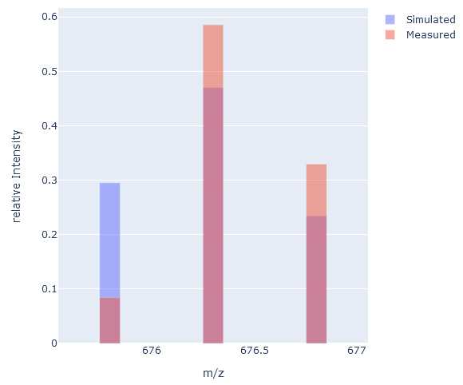

Label Efficiency Calculator
Jonathan Ott ~ last updated: 2022-05-19
Isotopic Distribution
Peptide signals exhibit a characteristic shape in the mass spectrum that depend on their isotopic profile, which is defined by the number of naturally occurring isotopes in the peptide. The occurrence probabilities of natural isotopes are reflected in the mass spectrum by the relative heights of the peak series belonging to the respective peptide. The frequency at which natural isotopes occur is known and can be used to compute the isotope distribution of a molecule. The isotopic distribution for a given peptide molecule C(v)H(w)N(x)O(y)S(z) is described by the following product of polynomials:
Symbolic expansion of the polynomials results in many product terms, which correspond to different isotopic variants of a molecule. Even for molecules of a medium size, the straightforward expansion of the polynomials leads to an explosion regarding the number of product terms. Due to this complexity, there was a need to develop algorithms for efficient computation. MIDAs (Alves and Yu 2005) is one of the more elaborate algorithms to predict an isotope cluster based on a given peptide sequence.
Stable isotopic peptide labeling is an established technique in proteomics experiments. While an excellent tool when carried out correctly, it also exposes challenges and pitfalls that have to be checked and possibly accounted for. One of these pitfalls is the efficiency with which the proteins were labeled. The isotopic pattern can be used to estimate the labeling efficiency by comparing measured isotopic patterns to simulated patterns with known label efficiency.
Simulating Isotopic Clusters for peptides
Before we start, we need to load our dependencies. The MIDAs implementation we are using here is located in BioFSharp. FSharp.Stats is required later on as well.
|
Our function for the generation of the isotopic distributions takes a Formula as an input. A Formula is a type in BioFSharp which is a map of element information and
their number of occurences. So we start by defining a convenience function that converts an amino acid string to a Formula and adds water to reflect hydrolyzed state in a mass spectrometer.
let toFormula peptide =
peptide
|> BioSeq.ofAminoAcidString
|> BioSeq.toFormula
|> Formula.add Formula.Table.H2O
Next, we have our isotopic pattern simulation function. It predicts an isotopic distribution of the given formula at the given charge, normalized by the sum of probabilities, using the MIDAs algorithm.
let generateIsotopicDistribution (charge:int) (f:Formula.Formula) =
IsotopicDistribution.MIDA.ofFormula
IsotopicDistribution.MIDA.normalizeByProbSum
0.01 // resolution
0.01 // minimal probability
charge
f
We can now apply our generateIsotopicDistribution function to a example peptide ion, in this case AAGVLDNFSEGEK with an charge of 2.
let midaPattern =
"AAGVLDNFSEGEK"
|> toFormula
|> generateIsotopicDistribution 2

The isotopic pattern we simulated so far corresponds to an unlabeled version of the peptide ion. In this example, we want to calculate the label efficiency for a
15N labeled peptide ion. Therefore, we need a function to add 15N labeling to our Formula for the simulation function.
let label n15LableEfficiency formula =
let heavyN15 = Elements.Di (Elements.createDi "N15" (Isotopes.Table.N15,n15LableEfficiency) (Isotopes.Table.N14,1.-n15LableEfficiency))
Formula.replaceElement formula Elements.Table.N heavyN15
We now apply our generateIsotopicDistribution function to the same peptide ion as above, but now with a 15N label efficiency of 95%.
let midaPatternLE95 =
"AAGVLDNFSEGEK"
|> toFormula
|> label 0.95
|> generateIsotopicDistribution 2

With those functions we are now able to simulate isotopic patterns for any peptide with any charge and label efficiency. In the next step we use those functions to determine the label efficiency of real life data.
Comparing simulated Isotopic Clusters with measured Isotopic Clusters
Those m/z and intensity traces were measured in a mass spectrometer for the 15N labeled peptide ion AAGVLDNFSEGEK we used before.
let mz = [|675.7949645701999;676.2983662177933;676.8017942912567|]
let intensity = [|0.0846659638221692;0.5856855554667739;0.3296484807110569|]

If we now compare the measured pattern to the simulated pattern, we see some differences. The m/z values for the measured pattern are identical with peaks in the simulated pattern, but they are different in relative intensity and peak count.
It is difficult to extract all peaks of an isotopic pattern from an MS run. So we need to adapt our simulated pattern to better fit the measured data and filter the simulated pattern for peaks present in the experimentally measured pattern. Also, while both patterns are normalized in a way that their intensities sum to 1, they were normalized independently from each other. So we normalize our simulated pattern again after filtering to have comparable patterns.
let measuredPattern = Array.zip mz intensity
let normBySum (a:seq<float*float>) =
let s = Seq.sumBy snd a
Seq.map (fun (x,y) -> x,y / s) a
let simulatedPattern =
measuredPattern
|> Array.map (fun (mz,intensities) ->
mz,
midaPatternLE95
|> Seq.filter (fun (mzSim,intensitiesSim) -> abs(mzSim-mz) < 0.05 )
|> Seq.sumBy snd
)
|> normBySum

Now our simulated pattern with a label efficiency of 95% fits the measured pattern better than before, but still not quite well. So our real label efficiency is likely different. To better determine the similarity of our patterns, we can use the Kullback-Leibler divergence, which gives us a measure of how our simulated pattern is different from our measured pattern. We can use it in this case since our isotopic patterns can be abstracted as probability distributions.
let klDiv (p:seq<float>) (q:seq<float>) =
Seq.fold2 (fun acc p q -> (System.Math.Log(p/q)*p) + acc) 0. p q
klDiv (simulatedPattern |> Seq.map snd) (measuredPattern |> Seq.map snd)
val it: float = 0.1856483998
So the Kullback-Leibler divergence for our isotopic patterns is ~0.19. The smaller the divergence, the better the fit. So our simulated pattern can still be improved through the label efficiency to better fit our measured pattern.
Determining Label Efficiency
To better work for general use cases, we can now take the functions we used above and modify them so that in the end we have a function that takes the measured isotopic pattern, the corresponding peptide sequence with charge and a label efficiency.
let simulateFrom peptideSequence charge lableEfficiency =
let simPattern =
peptideSequence
|> toFormula
|> label lableEfficiency
|> generateIsotopicDistribution charge
simPattern
let compareIsotopicDistributions (measured:(float*float)[]) (simulated:(float*float) list)=
let patternSim =
measured
|> Seq.map (fun (mz,intensities) ->
mz,
simulated
|> Seq.filter (fun (mzSim,intensitiesSim) -> abs(mzSim-mz) < 0.05 )
|> Seq.sumBy snd
)
|> normBySum
let klDiv = klDiv (patternSim |> Seq.map snd) (measured |> Seq.map snd)
klDiv
let calcKL extractedIsoPattern peptideSequence charge lableEfficiency =
let sim = simulateFrom peptideSequence charge lableEfficiency
let comp = compareIsotopicDistributions extractedIsoPattern sim
comp
If we now give the parameters for the measured pattern, peptide sequence and charge to this function, we have a function that takes a label efficiency and returns a measure for the pattern similarity. This function can then be used in a minimization function. For this we will use an algorithm called 'Brent's method', which is implemented in FSharp.Stats. Since we don't expect a label efficiency below 80% in our example, we search for the label efficiency with the best fit between 80% and 99.9%.
FSharp.Stats.Optimization.Brent.minimize
(calcKL measuredPattern "AAGVLDNFSEGEK" 2)
0.8
0.999
val it: float option = Some 0.9892291257
According to Brent, the simulated pattern with a label efficiency of ~0.99 fits best to our measured pattern. We can now visualize both patterns and compare them.
let midaPatternOptimal =
"AAGVLDNFSEGEK"
|> toFormula
|> label 0.9892291257
|> generateIsotopicDistribution 2
let simulatedPattern =
measuredPattern
|> Array.map (fun (mz,intensities) ->
mz,
midaPatternOptimal
|> Seq.filter (fun (mzSim,intensitiesSim) -> abs(mzSim-mz) < 0.05 )
|> Seq.sumBy snd
)
|> normBySum

As we can see now, the simulated pattern is almost identical to the measured pattern. We can check the Kullback-Leibler divergence for our new pattern again and see, that the divergence is also better when compared to our 95% label efficiency pattern.
klDiv (simulatedPattern |> Seq.map snd) (measuredPattern |> Seq.map snd)
val it: float = 0.0002724543862
Now, we are not limited to one peptide ion with our label efficiency calculation. We can perform this for every peptide ion in a mass spectrometry run and get a label efficiency coupled with a "quality measurement". This can give us a good idea for the label efficiency in a sample.

val int : value:'T -> int (requires member op_Explicit)
<summary>Converts the argument to signed 32-bit integer. This is a direct conversion for all primitive numeric types. For strings, the input is converted using <c>Int32.Parse()</c> with InvariantCulture settings. Otherwise the operation requires an appropriate static conversion method on the input type.</summary>
<param name="value">The input value.</param>
<returns>The converted int</returns>
--------------------
[<Struct>] type int = int32
<summary>An abbreviation for the CLI type <see cref="T:System.Int32" />.</summary>
<category>Basic Types</category>
--------------------
type int<'Measure> = int
<summary>The type of 32-bit signed integer numbers, annotated with a unit of measure. The unit of measure is erased in compiled code and when values of this type are analyzed using reflection. The type is representationally equivalent to <see cref="T:System.Int32" />.</summary>
<category>Basic Types with Units of Measure</category>
<summary>Contains operations for working with arrays.</summary>
<remarks> See also <a href="https://docs.microsoft.com/dotnet/fsharp/language-reference/arrays">F# Language Guide - Arrays</a>. </remarks>
<summary>Combines the two arrays into an array of pairs. The two arrays must have equal lengths, otherwise an <c>ArgumentException</c> is raised.</summary>
<param name="array1">The first input array.</param>
<param name="array2">The second input array.</param>
<exception cref="T:System.ArgumentNullException">Thrown when either of the input arrays is null.</exception>
<exception cref="T:System.ArgumentException">Thrown when the input arrays differ in length.</exception>
<returns>The array of tupled elements.</returns>
val seq : sequence:seq<'T> -> seq<'T>
<summary>Builds a sequence using sequence expression syntax</summary>
<param name="sequence">The input sequence.</param>
<returns>The result sequence.</returns>
--------------------
type seq<'T> = System.Collections.Generic.IEnumerable<'T>
<summary>An abbreviation for the CLI type <see cref="T:System.Collections.Generic.IEnumerable`1" /></summary>
<remarks> See the <see cref="T:Microsoft.FSharp.Collections.SeqModule" /> module for further operations related to sequences. See also <a href="https://docs.microsoft.com/dotnet/fsharp/language-reference/sequences">F# Language Guide - Sequences</a>. </remarks>
val float : value:'T -> float (requires member op_Explicit)
<summary>Converts the argument to 64-bit float. This is a direct conversion for all primitive numeric types. For strings, the input is converted using <c>Double.Parse()</c> with InvariantCulture settings. Otherwise the operation requires an appropriate static conversion method on the input type.</summary>
<param name="value">The input value.</param>
<returns>The converted float</returns>
--------------------
[<Struct>] type float = System.Double
<summary>An abbreviation for the CLI type <see cref="T:System.Double" />.</summary>
<category>Basic Types</category>
--------------------
type float<'Measure> = float
<summary>The type of double-precision floating point numbers, annotated with a unit of measure. The unit of measure is erased in compiled code and when values of this type are analyzed using reflection. The type is representationally equivalent to <see cref="T:System.Double" />.</summary>
<category index="6">Basic Types with Units of Measure</category>
<summary>Contains operations for working with values of type <see cref="T:Microsoft.FSharp.Collections.seq`1" />.</summary>
<summary>Returns the sum of the results generated by applying the function to each element of the sequence.</summary>
<remarks>The generated elements are summed using the <c>+</c> operator and <c>Zero</c> property associated with the generated type.</remarks>
<param name="projection">A function to transform items from the input sequence into the type that will be summed.</param>
<param name="source">The input sequence.</param>
<returns>The computed sum.</returns>
<summary>Return the second element of a tuple, <c>snd (a,b) = b</c>.</summary>
<param name="tuple">The input tuple.</param>
<returns>The second value.</returns>
<summary>Builds a new collection whose elements are the results of applying the given function to each of the elements of the collection. The given function will be applied as elements are demanded using the <c>MoveNext</c> method on enumerators retrieved from the object.</summary>
<remarks>The returned sequence may be passed between threads safely. However, individual IEnumerator values generated from the returned sequence should not be accessed concurrently.</remarks>
<param name="mapping">A function to transform items from the input sequence.</param>
<param name="source">The input sequence.</param>
<returns>The result sequence.</returns>
<exception cref="T:System.ArgumentNullException">Thrown when the input sequence is null.</exception>
<summary>Builds a new array whose elements are the results of applying the given function to each of the elements of the array.</summary>
<param name="mapping">The function to transform elements of the array.</param>
<param name="array">The input array.</param>
<returns>The array of transformed elements.</returns>
<exception cref="T:System.ArgumentNullException">Thrown when the input array is null.</exception>
<summary>Returns a new collection containing only the elements of the collection for which the given predicate returns "true". This is a synonym for Seq.where.</summary>
<remarks>The returned sequence may be passed between threads safely. However, individual IEnumerator values generated from the returned sequence should not be accessed concurrently. Remember sequence is lazy, effects are delayed until it is enumerated.</remarks>
<param name="predicate">A function to test whether each item in the input sequence should be included in the output.</param>
<param name="source">The input sequence.</param>
<returns>The result sequence.</returns>
<exception cref="T:System.ArgumentNullException">Thrown when the input sequence is null.</exception>
<summary>Absolute value of the given number.</summary>
<param name="value">The input value.</param>
<returns>The absolute value of the input.</returns>
<summary>Applies a function to corresponding elements of two collections, threading an accumulator argument through the computation.</summary>
<remarks> The two sequences need not have equal lengths: when one sequence is exhausted any remaining elements in the other sequence are ignored. If the input function is <c>f</c> and the elements are <c>i0...iN</c> and <c>j0...jN</c> then computes <c>f (... (f s i0 j0)...) iN jN</c>.</remarks>
<param name="folder">The function to update the state given the input elements.</param>
<param name="state">The initial state.</param>
<param name="source1">The first input sequence.</param>
<param name="source2">The second input sequence.</param>
<returns>The final state value.</returns>
<exception cref="T:System.ArgumentNullException">Thrown when the either of the input sequences is null.</exception>
<summary>Provides constants and static methods for trigonometric, logarithmic, and other common mathematical functions.</summary>
System.Math.Log(a: float, newBase: float) : float
<summary>The type of immutable singly-linked lists. </summary>
<remarks>See the <see cref="T:Microsoft.FSharp.Collections.ListModule" /> module for further operations related to lists. Use the constructors <c>[]</c> and <c>::</c> (infix) to create values of this type, or the notation <c>[1; 2; 3]</c>. Use the values in the <c>List</c> module to manipulate values of this type, or pattern match against the values directly. See also <a href="https://docs.microsoft.com/dotnet/fsharp/language-reference/lists">F# Language Guide - Lists</a>. </remarks>
namespace FSharp
--------------------
namespace Microsoft.FSharp
<summary> Finds the minimum in the given function between the lower and upper boundary with tolerance 10^-7 via brent search. Returns None if 100 iterations are reached. </summary>
<summary>The type of optional values. When used from other CLI languages the empty option is the <c>null</c> value. </summary>
<remarks>Use the constructors <c>Some</c> and <c>None</c> to create values of this type. Use the values in the <c>Option</c> module to manipulate values of this type, or pattern match against the values directly. 'None' values will appear as the value <c>null</c> to other CLI languages. Instance methods on this type will appear as static methods to other CLI languages due to the use of <c>null</c> as a value representation.</remarks>
<category index="3">Options</category>
<summary>The representation of "Value of type 'T"</summary>
<param name="Value">The input value.</param>
<returns>An option representing the value.</returns>